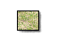

When using the "Official 1900-2030" Ruleset, the types of terrain and their effects:
 Cities are good defensive locations for infantry (+50% Defense).
Cities are good defensive locations for infantry (+50% Defense).Fortifications are good defensive locations for all ground units (+50% defense).
Roads provide a modest movement rate increase for infantry (+25%), and a large increase for vehicles (+100%).
Mountains are impassible to armored units (except via roads). Infantry in mountains have a +25% defensive bonus, Vehicles suffer a -25% defensive penalty.
Forest slows movement of vehicles (-50%) and causes a 25% defensive penalty. Infantry get a +25% defensive bonus.
Plains have no effect on movement or combat capabilities of units.
Desert terrain decreases infantry defense (-25%) and increases maintenence costs on all ground units (+25%).
Arctic slows movement of all units (-50%) and increases maintenence costs (+50%).
Units inside Cities and Fortifications use City and Fortification values, rather than the values of the surrounding terrain. When units travel on roads, they use the movement rates of the "Road" terrain, but the combat and maintenence values of the surrounding terrain. For example, Armored units cannot travel through the mountains, but they can travel on roads in those mountains. When this occurs, Armored unit use the movement rates associates with roads, but the maintenence and combat values associated with mountains.
Related Topics:
CitiesFortifications